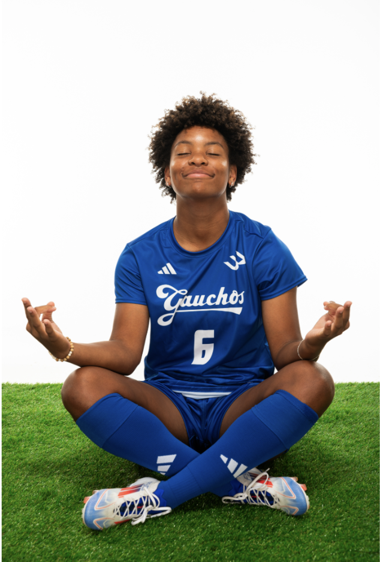
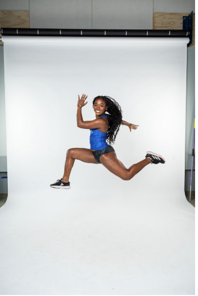
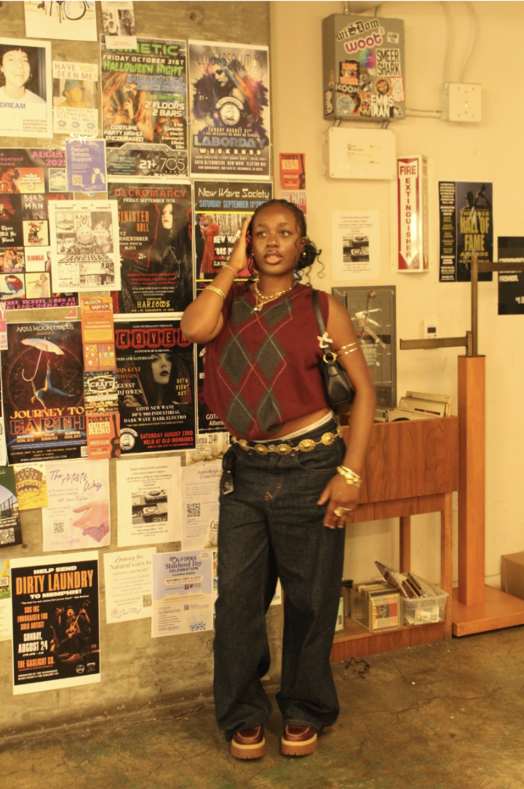

Student Roster
Stories from athletes at UCSB.

Devin Greer (she/they)
Major: Psychology and Brain Sciences and Black Studies Minor
Year: Sophomore
Hometown: Sacramento, California
Favorite Music Artist/Band: kwn, Kehlani, Michael Jackson, Rihanna
Devin’s Story
My parents put me into soccer at around 4 years old and I have been playing ever since. I played a bunch of other sports throughout my childhood, but soccer always was there and I just got really good at it. My family was always a big sports family as my dad played college football at Berkeley and my mom was super involved by helping coach our elementary/middle school track team and some in high school. My twin sister and I were always on the same team which was the best thing because I automatically had a best friend on any team we were on. I realized I was pretty good at soccer when I started to get invited to special id camps and was recognized at tournaments. I got recruited by going to ECNL showcases and college coaches started reaching out to me and replying to emails in my junior year of high school.
I decided to come to UCSB because the coaching staff were very responsive and showed genuine interest and I knew I could make an immediate impact at a mid-major program. When I came on an unofficial visit and official visit, the girls on the team were super welcoming and I could tell that it would be a great environment for me to develop. My favorite part of being a UCSB student now is the campus is so pretty and there are always events going on weekly. Being by the ocean is just a blessing and living by the beach is something I never could have imagined for myself.
Other than being on the women's soccer team, I am on the board of a mental health awareness club called Active Minds and create and post on the Instagram account. I work for the athletics department on the Events Staff team which involves helping at various athletic events. When I have time, I like to volunteer for several different nonprofit organizations and write for the Daily Nexus which is the student newspaper on campus. I got involved with all these positions by either applying through postings on social media or emailing the organizations themselves expressing my interest.
Being a black, queer athlete can feel isolating at times, but I really got so lucky since my team and coaches are super accepting. I think it is important to find those special spaces with other people who can relate to certain parts of your identity can be very uplifting so I encourage going to queer, black, POC, etc. events. I know it is hard to feel like you belong in white dominated space like a PWI, but it is difficult to get into high ranked universities so you are worthy of your seat at the table no matter your background or who you are.
Advice to High School Students or Incoming Freshman: My greatest piece of advice is to make connections and to reach out to people in career positions, majors, research, etc. that you are interested in. My dad always told me “a closed mouth never gets fed.” Advocate for yourself and make your name known even though you might not know where a connection or relationship will take you in the future.
Favorite Course: My favorite course so far has been History 49A - Survey of African History. Professor Ware was such an engaging lecturer and I learned so many things about Africa and debunked many misconceptions I had about Africa. I recommend this course to everyone!
Plans After Graduation: I am not totally sure what I want to do post graduation, but it would be cool to pursue a professional career for soccer. I have always been interested in working in healthcare and pediatrics specifically so possibly a physician assistant, nurse, occupational therapist, or something like that.
Instagram: @devingreer20
{kind=link}
{kind=link}
{kind=link}

Amor Jones (she/her)
Major: Communications and Art History Minor
Year: Senior
Hometown: Los Angeles, CA
Favorite Artist: Tyler the Creator
Amor’s Story
I’ve been running track since I was 6 years old. I started off playing soccer then my mother and coaches saw potential to run track so I started running. I later got more interested in track because of a famous olympian Flo Jo! I loved her style and how she owned the track when she stepped on it so I decided I wanted to be like her!
I decided on UCSB because it’s a gorgeous location, I mean who wouldn’t want to go to school right by the beach. My favorite part about UCSB is the beach and the amazing people that live here. Having easy access to the beach and being able to turn around and still have an aspect of the forest is amazing. I’m a part of the fashion club because I love anything to do with fashion.
I would want Black students attending a PWI to know that it is ok, my experience at UCSB has not been bad. I feel like finding your people and becoming close with them will make your experience a lot better because it’s safe knowing you have more Black students in your circle.
Advice to High School Students or Incoming Freshman: Honestly I would say utilize the UCEN and Student Resource Building, there are so many resources there that so many students don’t take advantage of.
Favorite Courses at UCSB: Probably Greek Mythology or my class about the history of photography. I loved Greek because I’ve always loved learning about Greek mythology and consolations that connect to them. As far as photography I’m a photographer so the history of it is very interesting.
Plans After Graduation: As of right now I’m planning on getting a job, staying in Santa Barbara, helping coach my track team and traveling.
Instagram: @amor_jones
{kind=link}
{kind=link}
{kind=link}

Layo Ogunleye (she/her)
Major: Economics & Accounting + Communications
Year: Sophomore
Hometown: Fairfield, CA
Favorite Artists: PARTYNEXTDOOR, Frank Ocean, Ruger, SZA
Layo’s Story
I have always been interested in the arts. I grew up loving to sing and dance. I did ballet (not for long), gymnastics (for around a year), played the flute, praise dance in my church, and I sang in my choir. Then in quarantine I started to learn a lot about hair because I wasn't getting my hair done, so I wanted to learn how to do it myself. I learned a lot about my natural hair but leaned more into protective styles. I learned a lot of this for myself, but my mom was also a big push and helped me do anything I was interested in.
I chose to come to UCSB because I wanted a change of pace to be honest. I am from Norcal and had never had real experience in Socal. I love the idea of the beach and just hot weather so I wanted to come. And that's my favorite part of being a UCSB student. The weather, the environment, but also how interconnected the campus is. I like that it is smaller and you feel more of a community rather than competing for everything
I am the Secretary of the Nigerian Student Association and Membership Development Coordinator for Black Student Union. I also work as a Community Engagement Intern at the Office of Admissions and I recently got hired as an OBSD Intern. I think all the positions point to my passion in outreach and inclusivity. One of my main takeaways at UCSB is seeing the lack of diversity and I think initially I was very saddened by the campus. But getting involved has really helped me see that I am capable of making change.
I think my identity as a Black student has become the center of my experience at UCSB due to everything I am involved in which has shaped me to be a person that people are comfortable with. But, I encourage everyone to pursue higher education, especially as a Black student. Higher education is meant for everybody who qualifies, regardless of skin color. I think it is really important to take over spaces like these because we are the start of change. These institutions lead us to jobs that are high status and places where we do and want to see people that look just like us and are looking out for marginalized communities.
Advice to High School Students or Incoming Freshman: I would definitely say to research your major and all the requirements. For advice, I would say be intentional with the spaces you put yourself in. If you know you want to be involved in clubs, research, or opportunities, I would know in advance where to go and put yourself out there.
Favorite Course at UCSB: Philosophy 4- Intro to Ethics. I have always loved the idea of philosophy and I am a very inquisitive person. I took it with Elinor Mason and I just loved learning about the different philosophers and their different views. My professor also had a British accent and was fun to listen to :)
Plans After Graduation: After graduation, I would like to get my masters in business administration. To be honest, I do not know what exactly is in my future, butttt I know I want to work in inclusive marketing, entertainment, and creative directing. I also still love hair and my biggest dream is to open black hair salons all through the US that are dependable and consistent. Just like how there are supercuts all through the US.
Instagram: @_layyyooo · @hair.bylayo
{kind=link}
{kind=link}
{kind=link}
{kind=link}
{kind=link}
{kind=link}
{kind=link}